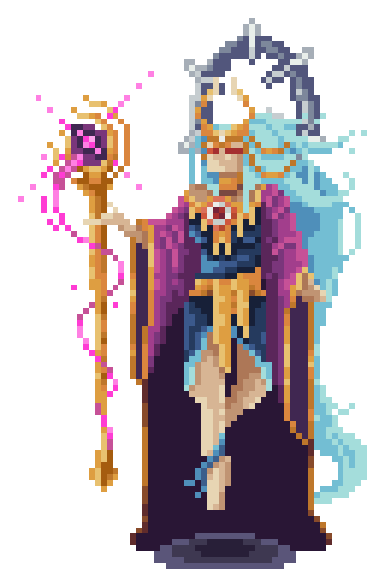

Tabak ng Luha ng Buwan - Ang Bantay ni Mayari
Mula sa luha ni Mayari na bumagsak sa Bundok Pulag, tumubo ang pilak na kristal na naging Tabak ng Luha ng Buwan. Ang sandatang ito’y puno ng kalungkutan, at sinumang humawak nito ay maaaring lamunin ng hinagpis ng diyosa. Subalit sa kamay ng karapat-dapat, ito’y nagiging espada ng liwanag na kayang humati ng anino at magbigay pag-asa sa gitna ng dilim.
Ang Taga Protekta

Mayari